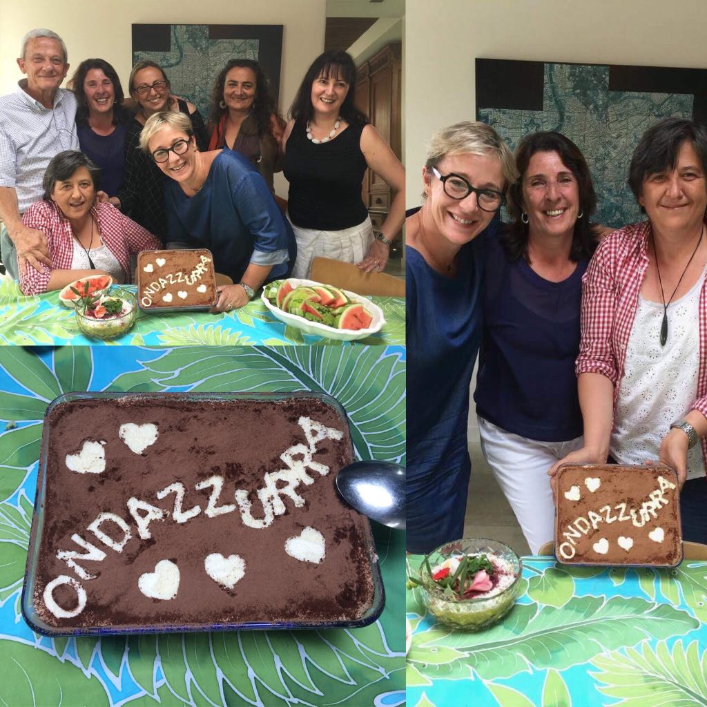
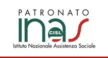

|
Cari Connazionali, Vi inoltriamo la versione breve del verbale della riunione tenutasi il 23 marzo a Auckland. Come sempre, trovate la versione integrale del verbale sul nostro sito, alla pagina Documenti, o semplicemente cliccando qui. Vi ricordiamo che la prossima riunione del ComItEs si terrà a Wellington. Vi forniremo maggiori dettagli a questo riguardo nelle prossime settimane. Per coloro che si troveranno in sede, speriamo possiate cogliere l'occasione per venire a conoscerci. Sandro Aduso Presidente ComItEs Wellington Inc. AMMINISTRAZIONE Il bilancio consuntivo 2017 è stato presentato all’ambasciata e trasmesso da quest’ultima al MAECI. Siamo attualmente in attesa di approvazione. Per quanto riguarda il bilancio preventivo per il 2018, il finanziamento approvato dal MAECI ammonta a circa NZD 11,200, contro una richiesta di NZD 15,886. Ciò è dovuto all’applicazione rigorosa di criteri legati alla consistenza geografica, sociale e numerica della comunità italiana. Questi criteri sono, sfortunamente, a sfavore della Nuova Zelanda, e comportano una diminuzione dei fondi operativi per il 2018. Per evitare di compromettere la capacità operativa del comitato, si decide di inviare al MAECI, col supporto dell’ambasciata, un comunicato per delineare le difficoltà così causate. (nota post-riunione: il Comitato ha condotto una preliminare revisione del budget per mantenere le spese 2018 entro i diminuiti fondi operativi notificati dal MAECI). PROGETTI Prima fermata NZ: il Comites coordinerà le notizie utili sul proprio sito con quanto è presente nel sito dell’Ambasciata, oltre ad aggiungere altre informazioni come si presenteranno. Politiche e progetti a sostegno del Made by Italians: valorizzare in Nuova Zelanda l’italianità in tutte le sue forme, e in particolare i produttori, artisti e imprenditori italiani locali. Proposte e idee dovrebbero partire dagli interessati, ed essere rivolte alla coordinatrice del progetto, Alessandra Zecchini. Per parte sua, Il Comites elaborerà una proposta concettuale. Radio Ondazzurra: la coordinatrice Chiara Corbelletto informa che l’ascolto dei podcasts è in rapida crescita. Negli ultimi sei mesi l’indice di ascolto è aumentato del 99%. L’archivio podcast viene aggiornato mensilmente, e attualmente raccoglie 78 puntate. L’ascolto in podcasts di Ondazzurraè adesso possibile anche da cellulare e tablet scaricando gratuitamente la nuova applicazione Podbean Podcast & Player. Informazioni sul questo nuovo APP sono state diramate con comunicato stampa alle principali associazioni italiane, all’Ambasciata e alle Università di Auckland e Victoria di Welington. Si prevede che le remunerazioni alle due conduttrici di Ondazzurra per il prossimo anno di attività dovranno essere aumentate dato il notevole lavoro e crescente impegno. Sportello Patronato INAS NZ: è sempre disponibile per richieste di assistenza pensionistica e, quando possibile, anche per supporto in materia fiscale come IMU e TASI.La Dottoressa Antonella Lorenzini ha offerto la propria disponibilità in veste di volontaria per eventuali richieste di assistenza in materia fiscale. Pensioni / Sicurezza Sociale: tra i programmi dell’attuale governo neozelandese c’è anche il progetto di riesaminare il sistema pensionistico, quindi sarà opportuno esaminare tali cambiamenti quando avverranno. Intanto si considera la possibilità di utilizzare i fondi speciali ricevuti dal MAECI per commissionare uno studio tecnico sulla materia, che si concluda con un testo da sottoporre al Ministero del Lavoro, dal quale deve partire la proposta al governo neozelandese. (Facciamo riferimento al verbale integrale per ulteriori dettagli su questo complesso progetto, di cui è coordinatore Emilio Festa). Reciprocità patenti guida: il Comites ha valutato e lavorato sulla proposta ricevuta di richiedere il riconoscimento e conversione delle patenti neozelandesi in Italia (al momento esiste solo lo scambio patente). A questo proposito sono stati contattati il Ministero dei Trasporti italiano, e si è esaminata una simile richiesta australiana. Abbiamo incontrato lentezza di comunicazioni e scarso interesse. Abbiamo pertanto deciso che non è utile portare avanti tale richiesta. Documentazione Immigrazione: la commissione continua i suoi lavori, cercando di accelerare i tempi di caricamento sul sito del materiale già esistente. Si decide di caricare sul sito le ultime statistiche arrivate dall’Official Information Act office sull’immigrazione italiana degli ultimi dieci anni. La prossima riunione il 27 maggio sarà al Club Garibaldi di Wellington.Il Comites auspica di poter incontrare ed interagire con i connazionali in questa città. Oggi condividiamo una notizia in inglese dedicata ai giovani neozelandesi che vogliono studiare la lingua italiana all'Università di Auckland, e che può interessare ai discendenti degli italiani in Nuova Zelanda.
For the second year, Dante Alighieri Society of Auckland is offering tuition fees scholarships for two students to support their study of Italian at the University of Auckland. The scholarships will cover tuition fees for Italian 107, to be taken up in 2018. To be eligible, you must be a New Zealand citizen or permanent resident, and be 25 years old or younger. Children of Italian immigrants are welcomed to apply. To apply, please send an email to info@dante.org.nz by 7 May 2018 with an up-to-date CV, a written statement (which should include details of your proposed future study and career, any relevant work experience, interests and/or community involvement, your achievements, how this scholarship would be important for you) and one written reference. After all applications have been assessed, suitable candidates will be invited for an interview with Dante Alighieri School Committee at the beginning of June. Specific dates will be advised in due course. The scholarships will be awarded at the beginning of July, based on information provided in the application, interviews and students' performances in Italian 106. All info HERE Nell'ultimo decennio il numero di italiani in Nuova Zelanda è aumentato in modo considerevole.
Per chi fosse interessato condividiamo i dati dell'immigrazione italiana in Nuova Zelanda dall'anno 2007 all'anno 2017. Questi includono le richieste dei visti di residenza, lavoro (incluso WHV), studio e altre categorie, più una serie di dati interessanti: età, regione, occupazione ed il numero di visti accettati e rifiutati per ogni anno e categoria. I dati sono stati forniti al ComItEs Wellington su richiesta dall'ufficio Migration Trends Office, Ministry of Business, Innovation and Employment. I dati sono presentati in inglese. Per accedere cliccare qui.  The Italian Embassy in Wellington informs:
(Scroll down for English) ORIGINI ITALIA 2018: La MIB School of Management di Trieste, in collaborazione con ICE/ITA, organizza il corso di formazione manageriale "Origini Italia" destinato ai giovani discendenti di emigrati italiani residenti all'estero, con lo scopo di favorire la collaborazione tra le imprese italiane e i cittadini di origine italiana nel mondo. Il corso dura 5 mesi, l'iscrizione e` gratuita, e i costi di viaggio, vitto e alloggio sono coperti per la durata del corso (29 ottobre 2018- 6 aprile 2019). Informazioni piu` dettagliate sui contenuti del corso e sui criteri di ammissione sono reperibili sul sito http://mib.edu/master/programma-origini/origini-italia La scadenza per la presentazione delle domande e` il 31 maggio 2018 (20 posti disponibili). Orgini Italia Program 2018: ITA (Italian Trade Agency) and MIB Trieste School of Management promote and organise "Origini Italia Program 2018", an intensive Export Management and Entrepreneurial Development Course, aimed at the descendants of emigrants from Italy who are residents abroad, to promote a new and productive collaboration between those descendants and the Italian business system. The course will last from 29th October 2018 to 6th April 2019, it is free, and successfull applicants will have travel and accommodation expenses covered for the duration of the course. More information and full details on requirements and application process can be found at the link below http://mib.edu/en  In alto a sinistra: le conduttrici di Ondazzurra Antonella Coppolino e Carla Rotondo (prima fila) insieme a Sandro Aduso, Chiara Corbelletto, Gabriella Brussino, Sandra Fresia e Alessandra Zecchini del Comites Wellington (seconda fila). Foto a destra: il Team di Ondazzurra al completo, Carla, Chiara e Antonella, celebrano con un tiramisù tematico. Il contingente di Auckland del Comites oggi si è riunito informalmente per celebrare il successo della radio italiana Ondazzurra, e per ringraziare le due simpaticissime conduttrici Antonella Coppolino e Carla Rotondo. Il progetto Ondazzurra è partito nel settembre 2016 promosso come una delle attività inaugurali del Comites e sovvenzionato dal MAECI (Ministero degli Affari Esteri e della Cooperazione Internazionale). Ondazzurra, che è l’unico programma radiofonico in Nuova Zelanda trasmesso esclusivamente in lingua italiana, va in onda ogni domenica alle 11.20 dagli studi di Planet FM sulla frequenza 104.6 FM. Alternativamente potere ascoltare i programmi di Ondazzurra in ogni momento sul sito www.planetaudio.org.nz/ondazzurra, dove troverete anche i podcasts delle ultime cinque trasmissioni, oppure nell’archivio cronologico, disponibile in podcasts su: www.ondazzurra.podbean.com L'archivio podcast è curato da Chiara Corbelletto, membro del Comites responsabile per Ondazzurra, e in data odierna contiene le prime 78 puntate, ognuna con una breve descrizione dei contenuti e delle persone intervistate. I podcasts di Ondazzurra posso essere ascoltati anche dai cellulari e dispositivi mobili con la nuova PodBean Podcast APP. PodBean è gratuita e si scarica da Apple Store o da Google Play. Una volta installata l’applicazione basta fare la ricerca per Ondazzurra e selezionare la puntata che si vuole ascoltare. L’indice di ascolto dei podcast di Ondazzurra è salito del 79% negli ultimi sei mesi. Potete raggiungere Ondazzurra con suggerimenti e commenti scrivendo a: chiara.corbelletto@comitesnz.com I cittadini italiani iscritti all'AIRE o registrati per votare all'estero riceveranno il plico elettorale dall'Ambasciata Italiana di Wellington entro meta` febbraio. Le schede elettorali dovranno essere restituite entro le ore 16 del 1 Marzo. In Italia le elezioni si svolgeranno il 4 Marzo.
Per ulteriori informazioni rivolgersi al sito dell' Ambasciata Italiana Wellington, oppure cliccare sotto: Come si vota Slide Elezioni Politiche 2018 Updated 8 February 2018 Le liste definitive dei candidati RIPARTIZIONE ASIA, AFRICA, OCEANIA, ANTARTIDE sono: CAMERA SENATO Cliccare qui per le liste di tutte le ripartizioni estere. Italian Political elections 2018 Italian citizens registered with AIRE or registered to vote abroad will receive the electoral package from the Italian Embassy in Wellington by mid-February. The ballot papers must be returned by post to the Embassy before 4 pm on 1 March. In Italy the elections will take place on 4 March. For more information, please visit the Italian Embassy Wellington website, or click below links (in Italian): Come si vota Slide Elezioni Politiche 2018 The final lists of candidates ASIA, AFRICA, OCEANIA, ANTARCTICA DISTRIBUTION are: CAMERA SENATO Click here for the lists in the rest of the world. 213 Tanti auguri per un felice 2018 da tutti noi del Comites Wellington
Pubblichiamo un altro articolo che può fornire chiarimenti per coloro che attualmente lavorano all'estero. L' articolo originale e' reperibile su http://marcofedi.it
ROMA 30 NOVEMBRE 2017 FEDI (PD): LAVORATORI RIMPATRIATI, AGEVOLAZIONI FISCALI E VINCOLO DELL’ISCRIZIONE ALL’AIRE Domanda: per avere diritto alle agevolazioni fiscali stabilite dalla normativa in vigore a favore dei lavoratori (o laureati) italiani rimpatriati e previste dall’articolo 44 del Dl 78/2010 e dall’articolo 16 del Dlgs 147/2015 è necessario essere stati iscritti all’AIRE ed essersi cancellati conseguentemente dall’anagrafe della popolazione residente in Italia? La risposta è affermativa; lo stabiliscono la legge in vigore e le numerose circolari dell’Agenzia delle Entrate. Ricapitoliamo. L’art. 44 del DL n. 78/2010 (e successive modifiche) dispone che ai fini delle imposte sui redditi è escluso dalla formazione del reddito di lavoro dipendente o autonomo svolto in Italia il novanta per cento degli emolumenti percepiti dai docenti e dai ricercatori che, in possesso di titolo di studio universitario o equiparato e non occasionalmente residenti all'estero, abbiano svolto documentata attività di ricerca o docenza all'estero presso centri di ricerca pubblici o privati o università per almeno due anni continuativi e che vengono a svolgere la loro attività (di docenza o di ricerca) in Italia, acquisendo conseguentemente la residenza fiscale nel territorio dello Stato. L'agevolazione trova applicazione nel periodo d'imposta in cui il ricercatore diviene fiscalmente residente nel territorio dello Stato e nei tre periodi d'imposta successivi, a condizione che il soggetto mantenga la residenza fiscale in Italia. L’Agenzia delle Entrate ci spiega nella sua recente Risoluzione n. 146/E che in considerazione della rilevanza del solo dato dell'iscrizione nell'anagrafe della popolazione residente il soggetto trasferito all'estero che non si è mai cancellato da tale registro non può essere ammesso all'agevolazione in questione, così come non può essere ammesso ad altre agevolazioni aventi analoga finalità attrattiva di lavoratori dall'estero. Giova ricordare tuttavia che fa eccezione il regime della legge n. 238 del 2010, in via di esaurimento in quanto applicabile ai soli lavoratori rientrati entro il 31 dicembre 2015 e in vigore comunque fino a dicembre 2017; infatti tale legge, a differenza dell'art. 44 del DL n. 78 del 2010, non rinvia espressamente al concetto di residenza valido ai fini reddituali (cioè alla residenza fiscale ex art. 2 del TUIR), ed era stato a suo tempo precisato che la mancata iscrizione all'Aire non determinava in questo caso l'esclusione dal beneficio previsto per i lavoratori rientrati in Italia. Diversamente, identica interpretazione non può essere ammessa per coloro che chiedono di beneficiare dell'agevolazione prevista all'art. 44 del DL n. 78 del 2010 (docenti e ricercatori), in quanto tale norma fa espresso riferimento all'acquisizione della residenza fiscale; pertanto, è sufficiente che il soggetto integri una sola delle condizioni previste dall'art. 2 del TUIR per essere considerato residente ai fini fiscali nel territorio dello Stato anche se trasferitosi all’estero e perciò escluso dalle agevolazioni. Ricordiamo che il citato articolo 2 del TUIR, al comma 2, considera residenti le persone fisiche che, per la maggior parte del periodo d’imposta, cioè per almeno 183 giorni l’anno (o 184 giorni in caso di anno bisestile), sono iscritte nelle anagrafi della popolazione residente o hanno nel territorio dello Stato il domicilio o la residenza ai sensi del codice civile. Le condizioni sopra indicate sono tra loro alternative, pertanto, la sussistenza anche di una sola di esse è sufficiente a far ritenere che un soggetto sia qualificato, ai fini fiscali, residente in Italia. Per sintetizzare: docenti e ricercatori per aver diritto alle agevolazioni fiscali previste per chi rientra in Italia devono essere stati iscritti all’AIRE prima del rientro. Lo stesso ragionamento (e relative condizioni: cioè l’iscrizione all’AIRE) vale per tutti i lavoratori i quali si avvalgono delle agevolazioni previste dall’art. 16 del Dlgs 147/2015 e cioè per i cosiddetti “impatriati” o “controesodati”. Infatti – ci ricorda l’Agenzia delle Entrate - anche il nuovo regime speciale per lavoratori “impatriati” richiede, fra gli altri requisiti, l'acquisizione della residenza fiscale ai sensi dell'art. 2 del TUIR e trova applicazione con riferimento ai redditi di lavoro dipendente (art. 49 del TUIR) ed assimilati (art. 50 del TUIR) e di lavoro autonomo (art. 53 del TUIR) prodotti nel territorio dello Stato, i quali concorrono – grazie alle agevolazioni previste - alla formazione del reddito complessivo ai fini Irpef nella misura del 50 per cento. Si sottolinea che anche il nuovo regime speciale per lavoratori “impatriati” richiede, fra gli altri requisiti, l'acquisizione della residenza fiscale ai sensi dell'art. 2 del TUIR nel senso che tale residenza era precedentemente fatta valere all’estero. La durata dell'agevolazione prevista dall'art. 16 del d.lgs. n. 147 del 2015 è di cinque periodi d'imposta, con inizio da quello in cui il soggetto trasferisce la residenza fiscale in Italia, che deve essere mantenuta per un minimo di due anni, pena la decadenza dal beneficio sin dall'inizio con applicazione di sanzioni ed interessi. L’articolo 16 del decreto legislativo n. 147 del 2015 individua sotto il titolo lavoratori “impatriati” diverse categorie di beneficiari, caratterizzate da specifici requisiti soggettivi, accomunate dalla circostanza di trasferirsi in Italia per svolgervi una attività lavorativa e che sono stati elencati nella Circolare dell’Agenzia delle Entrate n. 17/E del maggio 2017. Si ribadisce quindi (secondo l’Agenzia delle Entrate con Risoluzione n. 146/E del 29/11/2017 e Circolare n. 17/E del 23 maggio 2017) che anche per quanto riguarda questa tipologia di lavoratori, il soggetto trasferito all'estero che non si è mai cancellato dal registro dell’anagrafe della popolazione residente in Italia non può essere ammesso alle agevolazioni fiscali in questione aventi finalità attrattiva di lavoratori dall'estero. Ciò perché come l’articolo 44 del Dl 78/2010 anche l’articolo 16 del Dlgs 147/2015, rinvia espressamente al concetto di residenza valido ai fini reddituali – articolo 2 del Tuir – ai sensi del quale è sufficiente che il soggetto integri una sola delle condizioni ivi previste per essere considerato residente nel territorio dello Stato ai fini fiscali e non all’estero, mentre invece le agevolazioni sono concesse solo nel caso in cui si trasferisce la residenza fiscale dall’estero in Italia. Condividiamo due interessanti articoli del Deputato per la nostra circoscrizione Marco Fedi, uno sul nuovo Sistema Pubblico di Identità Digitale (SPID), e uno sulla Tassa dei rifiuti (Tari).
FEDI (PD): SPID ANCHE PER I RESIDENTI ALL’ESTERO: PRIMI SEGNALI POSITIVI, MA ANCORA LONTANI DA UNA VERA SOLUZIONE ROMA, 17 NOVEMBRE 2017, pubblicato da http://marcofedi.it Nei mesi scorsi avevo più volte interrogato il Governo sulla possibilità di registrazione per i residenti all’estero al nuovo Sistema Pubblico di Identità Digitale (SPID). Il MAECI e l'Agenzia per l'Italia Digitale (AgID) segnalano in questi giorni alcuni significativi passi avanti sulle procedure per accedere dall’estero alla pubblica amministrazione italiana, anche se non tutti i problemi sono stati effettivamente superati. SPID, il nuovo sistema di accesso alla pubblica amministrazione, permette a cittadini e imprese di accedere con un’unica identità digitale ai servizi online pubblici e privati ed è particolarmente importante, proprio per chi vive fuori dai confini nazionali, poter avere un rapporto diretto con la pubblica amministrazione. È assolutamente vero che tra le domande frequenti nel sito dell’Agenzia per l’Italia digitale, alla domanda “Può avere SPID anche un cittadino italiano residente all’estero?” appare una risposta che, confermando questa possibilità di iscrizione, sostituisce alla tessera sanitaria – che ricordo non viene normalmente rilasciata a residenti all’estero – il codice fiscale. Tuttavia, i soggetti qualificati al rilascio del codice SPID, gli “identity providers”, non hanno ancora aggiornato i propri siti. Non solo: molti cittadini residenti all’estero hanno un tesserino fiscale che non riporta sul retro il “numero di identificazione tessera” e pertanto saranno costretti a chiedere all’Agenzia delle Entrate, attraverso i Consolati, il rilascio di un nuovo tesserino fiscale. In sostanza, siamo ancora lontani da una vera semplificazione per i cittadini italiani residenti all’estero. Così come risultano ancora presenti delle problematicità per la registrazione degli operatori di Patronato per ottenere lo SPID. Credo sia indispensabile accelerare questa fase “decisionale” rispetto alla documentazione utile al fine della registrazione, garantendo che i soggetti certificatori si adeguino in tempi rapidi, oltre a prevedere l’accesso anche ad altri soggetti delle pubbliche amministrazioni particolarmente importanti per i residenti all’estero, ad esempio in tema di patenti di guida ed accesso alle agenzie del demanio. Link: http://marcofedi.it/spid-fedi-residenti-allestero-primi-segnali-positivi-ancora-lontani-vera-soluzione/ FINE Il Comites Wellington s’informerà presso l’ambasciata come ottenere il nuovo tesserino fiscale per i cittadini italiani muniti di vecchi tesserini senza numero di identificazine, nel frattempo potrete trovare ulteriori informazioni sul Sistema Pubblico di Identità Digitale cliccando qui: https://www.spidstart.it/#aboutus TARI – FEDI: ANCHE GLI ITALIANI ALL’ESTERO POSSONO CHIEDERE IL RIMBORSO PER EVENTUALI ERRORI DEI COMUNI ROMA, 23 NOVEMBRE 2017, pubblicato da http://marcofedi.it È di questi giorni la polemica relativa al fatto che numerosi comuni italiani hanno effettuato un errato computo della parte variabile della tassa sui rifiuti (TARI) ed è stato chiarito che il contribuente, anche se residente all’estero, può chiedere il rimborso del relativo importo in ordine alle annualità a partire dal 2014, anno in cui la TARI è entrata in vigore. È possibile che molti italiani residenti all’estero e proprietari di immobili in Italia possano essere interessati al rimborso per il semplice fatto che la TARI deve essere pagata da tutti i cittadini italiani residenti all’estero i quali siano proprietari di immobili in Italia, o per un terzo della tassa (i pensionati titolari di pensione estera o in convenzione) o per l’intera misura (tutti gli altri) – va ricordato tuttavia che i comuni possono applicare autonomamente riduzioni tariffarie o esenzioni, riservate alle abitazioni occupate da italiani residenti o domiciliati all’estero per un periodo di tempo superiore ai sei mesi all’anno e che quindi in questo caso molti italiani residenti all’estero non hanno dovuto pagare la TARI o l’hanno pagata in misura ridotta. Per quanto riguarda gli errori di calcolo per la TARI, la problematica prende spunto da una interrogazione parlamentare nella quale è stato chiesto se la quota variabile debba essere calcolata una sola volta anche nel caso in cui la superficie di riferimento dell’utenza domestica comprenda quella delle pertinenze dell’abitazione, poiché è emerso che i comuni talvolta computano la quota variabile sia in relazione all’abitazione che alle pertinenze, determinando, in tal modo, una tassa notevolmente più elevata rispetto a quella che risulterebbe considerando la quota variabile una volta sola rispetto alla superficie totale. Quindi, con riferimento alle pertinenze dell’abitazione, appare corretto computare la quota variabile una sola volta in relazione alla superficie totale dell’utenza domestica. ‘’Un diverso modus operandi da parte dei comuni – informa il Dipartimento delle Finanze in una sua recente Circolare del 20 novembre 2017, Prot. N. 41836/2017 – non troverebbe alcun supporto normativo, dal momento che condurrebbe a sommare tante volte la quota variabile quante sono le pertinenze, moltiplicando immotivatamente il numero degli occupanti dell’utenza domestica e facendo lievitare conseguentemente l’importo della TARI’’. Nella circolare viene richiamata la normativa di riferimento, ovvero l’art. 1, comma 651, della legge 27 dicembre 2013, n. 147 che rimanda al DPR n. 158 del 27 aprile 1999 per quanto riguarda il calcolo della tariffa da parte del Comune. Stabilito che la TARI si divide in quota fissa e quota variabile, la quota fissa di ciascuna utenza domestica deve essere calcolata moltiplicando la superficie dell’alloggio sommata a quella delle relative pertinenze per la tariffa unitaria corrispondente al numero degli occupanti dell’utenza stessa, mentre la quota variabile è costituita da un valore assoluto, vale a dire da un importo rapportato al numero degli occupanti che non va moltiplicato per i metri quadrati dell’utenza e va sommato come tale alla parte fissa. Infatti per ‘superficie totale dell‘utenza domestica’ si intende la somma dei metri quadri dell’abitazione e delle relative pertinenze. Ciò chiarito, con riferimento alle pertinenze dell’abitazione appare corretto – secondo il Dipartimento delle Finanze – computare la quota variabile una sola volta in relazione alla superficie totale dell’utenza domestica. Qualora quindi il contribuente riscontri un errato computo della parte variabile della tassa sui rifiuti effettuato dal Comune o dal soggetto gestore del servizio può chiedere il rimborso del relativo importo in ordine alle annualità a partire dal 2014, anno in cui la TARI è entrata in vigore. Il Dipartimento delle Finanze fornisce un esempio sul corretto calcolo della quota variabile della Tari per chiarire chi può richiedere il rimborso della tassa rifiuti a seguito dei calcoli errati da parte dei comuni. L’esempio mette a confronto due nuclei familiari, entrambi con 3 componenti, il primo dei quali possiede un’abitazione di 100 mq e il secondo un appartamento di 80 mq e una cantina di 20 mq, che costituisce la pertinenza dell’abitazione. L’esempio evidenzia l’errore di calcolo che, in molti comuni a partire dal 2014, ha portato a raddoppiare la Tari dovuta nel caso di possesso o detenzione di una o più pertinenze. L’errore riguarda l’applicazione errata della quota variabile sia sulla superficie dell’abitazione che sulle pertinenze. Con questo metodo, nuclei familiari con stessi componenti e con immobili della stessa superficie si sono trovati a pagare importi differenti. Ripetiamo che qualora i contribuenti dovessero riscontrare errori nel calcolo della quota variabile della Tari da parte del comune o del soggetto gestore del servizio di raccolta rifiuti, sarà possibile presentare domanda di rimborso per gli anni a partire dal 2014. La richiesta di rimborso della quota variabile Tari dovrà essere compilata e inviata al Comune indicando: dati necessari per identificare il contribuente; importo versato; importo per il quale si richiede il rimborso; dati identificativi della pertinenza che è stata erroneamente computata nel calcolo della Tari. Ovviamente data la complessità della materia e la realistica circostanza di poter ottenere un rimborso sulle eventuali tasse pagate, si consiglia i cittadini italiani residenti all’estero i quali hanno pagato dal 2014 la TARI sull’immobile posseduto in Italia, di rivolgersi ad esperti fiscali, al fine di verificare l’eventuale errore del comune di riferimento e il diritto al rimborso e di leggere in ogni caso con attenzione la Circolare succitata del Dipartimento delle Finanze dove si spiega in maniera dettagliata e con chiari esempi come possono essersi sbagliati i comuni nell’applicare la TARI e quando si può (o non si può) procedere all’istanza di rimborso. Link http://marcofedi.it/tari-fedi-anche-gli-italiani-allestero-possono-chiedere-rimborso-eventuali-errori-dei-comuni/ FINE

Dal 1 settembre 2017 è disponibile un servizio di Patronato in Nuova Zelanda. E` gestito dall’Inas (Istituto Nazionale Assistenza Sociale) Australia con sede in Melbourne.
Il ‘Punto Inas NZ’ fornisce un servizio di assistenza e tutela dei cittadini italiani o di origine italiana presenti in Nuova Zelanda in materia previdenziale, sanitaria e socio-assistenziale. Il servizio è gratuito ed ha lo scopo di difendere e promuovere il diritto alla salute, all’assistenza ed alla previdenza dei cittadini. Gli interessati possono inviare domande o richieste di informazioni all’indirizzo email pensioninz@gmail.com (attualmente gestito in Nuova Zelanda dal sig. Roberto Di Denia), oppure telefonare al numero: 021 256 1891 (martedì 17-19, mercoledì 9-12). Portare un servizio di Patronato in Nuova Zelanda è stato uno dei primi progetti individuati e portati avanti dal Comites Wellington. Ringraziamo il rappresentante parlamentare della nostra Circoscrizione Estero, on. Marco Fedi, il prof. Franco Papandrea del CGIE Australia, il direttore Inas Australia e membro del Comites Melbourne, dr. Ciro Fiorini, per aver reso possibile questa operazione. Facciamo i nostri migliori auguri al sig. Roberto Di Denia per essersi reso disponibile (a titolo volontario) a raccogliere e coordinare le richieste che perverranno. Tutti i cittadini interessati potranno usufruire di questo servizio. I’Inas è un istituto di assistenza e consulenza giuridico-sociale promosso da uno dei maggiori sindacati italiani: la CISL (Confederazione Italiana Sindacati Lavoratori). L’Inas ha una diffusa rete di uffici in Italia e nei maggiori paesi di emigrazione italiana (Europa, America, Australia). Il Punto Inas in Nuova Zelanda fa riferimento direttamente alla sede di Melbourne, e al dr. Fiorini, al quale verranno inoltrate tutte le richieste di assistenza, preventivamente esaminate e organizzate dal sig. Di Denia. Qui la lettera ricevuta da Inas con ulteriori informazioni. |
Fai clic qui per modificare.
Archivi
Giugno 2022
Categorie
Tutto
|
 Feed RSS
Feed RSS
Copyright © 2022